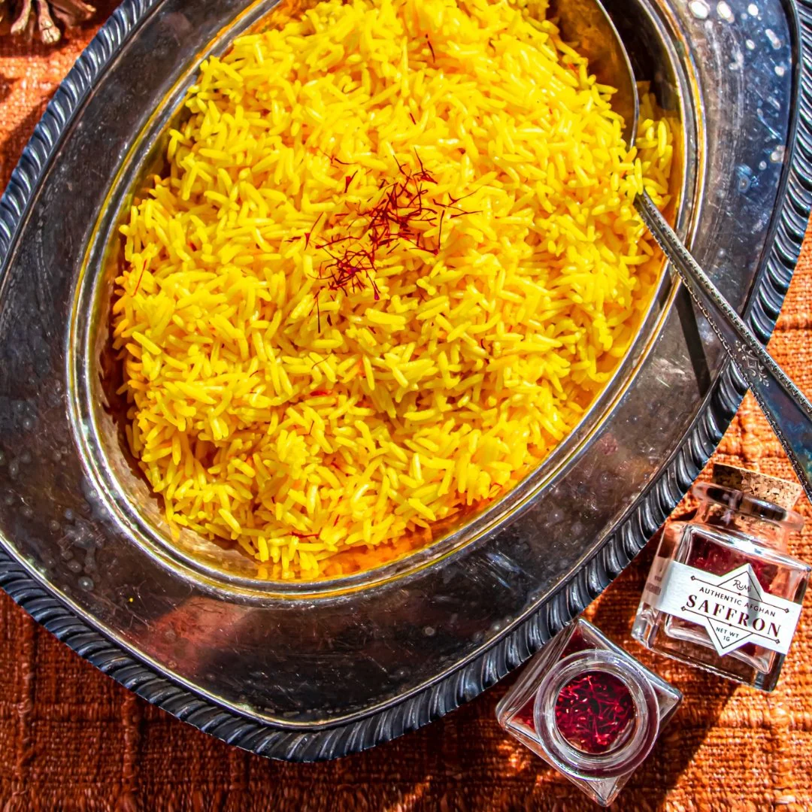

Why Cook with Rumi Spice?
At Rumi Spice, we believe in bringing extraordinary flavors to your table while supporting sustainable farming practices. From vibrant saffron to aromatic blends, our spices are the perfect addition to your culinary adventures.
Featured Recipes

Saffron Rice
Elevate your meals with this golden, fragrant saffron rice, a perfect side dish for any occasion.
View Recipe
Tandoori Chicken
Experience bold flavors with our tandoori chicken recipe, marinated with a blend of our premium spices.
View Recipe
Spiced Saffron Latte
Cozy up with this warm, creamy latte infused with saffron and hints of cardamom.
View RecipeCooking Tips
- For best results, toast your spices lightly to unlock their full flavor and aroma.
- Pair saffron with milk or cream-based recipes to enhance its vibrant color and taste.
- Use our spice blends to create quick and easy marinades for meats and vegetables.